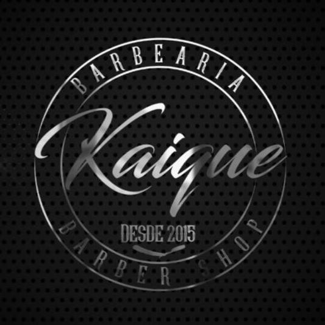

01
✦
Corte Kaique
Consultoria rápida + corte na tesoura e máquina + finalização.
60 minR$ 55 a partir de

Barbearia contemporânea
Corte preciso, barba alinhada e aquele momento só seu. Na Kaique, cada detalhe conta para você sair se sentindo no seu melhor.
Corte
Do clássico ao atual
Barba
Contorno e cuidado
Experiência
Um tempo só seu
Escolha seu ritual
Uma seleção essencial para manter seu visual em dia — com técnica, conversa boa e atenção aos detalhes.
Consultoria rápida + corte na tesoura e máquina + finalização.
Toalha quente, desenho preciso e acabamento confortável.
Corte + barba para sair renovado, sem pressa e sem complicação.
* Valores e informações acima são demonstrativos para esta prévia.
Mais que um corte
É sentar, respirar e confiar. A Barbearia Kaique nasceu para transformar o cuidado pessoal em um momento de presença — do primeiro papo ao último detalhe do acabamento.